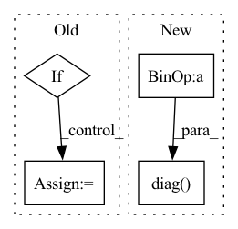

Pattern ID :18364

Before Change
c = np.arange(0, M)
c = sigma ** c
cov_2 = linalg.toeplitz(c, c)
elif structure == "random":
if rand_eigs_1:
cov_1 = np.random.rand(N, N)
U, S, V = np.linalg.svd(cov_1.T @ cov_1)
cov_1 = U @ (np.diag(np.random.rand(N))) @ V
else:
cov_1 = np.random.rand(N, N)
cov_1 = cov_1.T @ cov_1
// cov_1 = make_sparse_spd_matrix(N, alpha=0.7)
if rand_eigs_2:
cov_2 = np.random.rand(M, M)
U, S, V = np.linalg.svd(cov_2.T @ cov_2)
cov_2 = U @ (np.diag(np.random.rand(M))) @ V
else:
cov_2 = np.random.rand(M, M)
cov_2 = cov_2.T @ cov_2
// cov_2 = make_sparse_spd_matrix(M, alpha=0.7)
cov[:N, :N] = cov_1
After Change
up[(first + sparse_variables_1):, _] = 0
up = decorrelate_dims(up, cov[:N, :N])
up /= np.sqrt(np.diag((up.T @ cov[:N, :N] @ up)))
vp = np.random.rand(M, k) - 0.5
for _ in range(k):
In pattern: SUPERPATTERN
Frequency: 3
Non-data size: 4
Instances
Fragment ID: 60150421
Project Name: jameschapman19/cca_zoo
Commit Name: a4b73712a2008571b61bcbc2b2d54f54df9d8278
Time: 2021-02-01
Author: james.chapman.19@ucl.ac.uk
File Name: cca_zoo/data.py
M Class Name: AnonimousClass
N Class Name: AnonimousClass
M Method Name: generate_simulated_data(12)
N Method Name: generate_simulated_data(12)
M Parent Class:
N Parent Class:
M File Name: cca_zoo/data.py
N File Name: cca_zoo/data.py
M Start Line: 292
M End Line: 342
N Start Line: 292
N End Line: 326
'>
Before Change
weights = np.random.rand(view_p, k)
for _ in range(k):
if sparsity > 0:
if sparsity < 1:
sparsity = np.ceil(sparsity * view_p).astype("int")
// first = np.random.randint(N - sparse_variables_1)
// up[:first, _] = 0
// up[(first + sparse_variables_1):, _] = 0
mask = np.concatenate(([0] * sparsity, [1] * (view_p - sparsity))).astype(bool)
np.random.shuffle(mask)
weights[mask, _] = 0
weights = _decorrelate_dims(weights, cov_)
weights /= np.sqrt(np.diag((weights.T @ cov_ @ weights)))
After Change
weights = np.random.rand(view_p, k)
if sparsity < 1:
sparsity = np.ceil(sparsity * view_p).astype("int")
mask = np.stack((np.concatenate(([0] * sparsity, [1] * (view_p - sparsity))).astype(bool),) * k,
axis=0).T
np.random.shuffle(mask.flat)
while np.sum(np.unique(mask, axis=1, return_counts=True)[1] > 1) > 0 or np.sum(
np.sum(mask, axis=0) == 0) > 0:
np.random.shuffle(mask.flat)
weights = weights * mask
weights = _decorrelate_dims(weights, cov_)
if np.sum(np.diag((weights.T @ cov_ @ weights)) == 0) > 0:
print()
weights /= np.sqrt(np.diag((weights.T @ cov_ @ weights)))
true_features.append(weights)
'>
Fragment ID: 60150423
Project Name: jameschapman19/cca_zoo
Commit Name: fcbea373cbd6a237b62fdf365a4c7a09e46701ef
Time: 2021-05-06
Author: james.chapman.19@ucl.ac.uk
File Name: cca_zoo/data.py
M Class Name: AnonimousClass
N Class Name: AnonimousClass
M Method Name: generate_covariance_data(8)
N Method Name: generate_covariance_data(8)
M Parent Class:
N Parent Class:
M File Name: cca_zoo/data.py
N File Name: cca_zoo/data.py
M Start Line: 43
M End Line: 68
N Start Line: 35
N End Line: 71
'>
Before Change
negative_distance = distance * (1 - labels)
loss = (self.loss_margin - positive_distance) + (self.loss_margin - negative_distance)
loss = loss.mean()
elif self.contrastive_loss_type == "softmax":
distance_matrix /= self.temperature
loss = - F.log_softmax(distance_matrix).sum()
else:
raise ValueError(f"Contrastive loss type {self.contrastive_loss_type} not supported")
After Change
elif self.contrastive_loss_type == "simclr":
distance_matrix /= self.temperature
positive_examples_1 = torch.diag(distance_matrix, self.batch_size)
positive_examples_2 = torch.diag(distance_matrix, -self.batch_size)
positive_examples = torch.cat([positive_examples_1, positive_examples_2], dim=0)
mask = (~torch.eye(self.batch_size * 2, self.batch_size * 2, dtype=torch.bool)).to(self.device)
numerator = torch.exp(positive_examples)
denominator = (mask * torch.exp(distance_matrix)).sum(dim=1)
'>
Fragment ID: 60150432
Project Name: aditeyabaral/calbert
Commit Name: b2c6c9c898a60942ede94ec997b82d864b7fdabb
Time: 2022-07-21
Author: aditeya.baral@gmail.com
File Name: calbert/SiamesePreTrainer.py
M Class Name: SiamesePreTrainer
N Class Name: SiamesePreTrainer
M Method Name: calculate_contrastive_loss(4)
N Method Name: calculate_contrastive_loss(4)
M Parent Class:
N Parent Class:
M File Name: calbert/SiamesePreTrainer.py
N File Name: calbert/SiamesePreTrainer.py
M Start Line: 153
M End Line: 157
N Start Line: 153
N End Line: 165